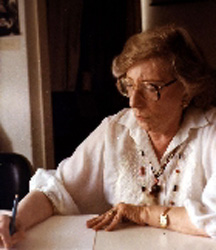

HOME FUNDEF
Isabel Aretz
Isabel Aretz
 Nace en Argentina, el 13 de abril de 1913. Etnomusicóloga, folkloróloga y compositora. Estudió piano con Rafael González y armonía, contrapunto y composición musical con Athos Palma, egresando del Conservatorio Nacional de Música de Buenos Aires de las clases de piano superior y composición. Perfeccionó estudios de instrumentación musical con Hector Villa-Lobos, en Brasil, becada por dicho compositor. Estudió antropología con José Imbelloni y etnografía con Enrique Palavencino en el Museo de Ciencias de Buenos Aires. Fue discípula y colaboradora del maestro argentino Carlos Vega. Desde 1940 realizó una serie de viajes de investigación por Argentina, Paraguay, Uruguay, Chile, Bolivia y Perú, para recopilar y estudiar la etnomúsica y el folklore. En 1947 viajó a Venezuela para organizar la sección de música del Servicio de Investigaciones Folklóricas creado pocos meses antes por Juan Liscano; hizo otros viajes por diferentes regiones de Venezuela en compañía de Luis Felipe Ramón y Rivera, con quien casó en este país, adoptando desde entonces la ciudadanía venezolana. En 1968 obtuvo su doctorado en música (summa cum laude) en la Pontificia Universidad Católica de Argentina. Ha sido becaria de la Comisión Nacional de Cultura de Argentina (1941-43) y becaria Guggenheim (1966-67) para realizar estudios en Centroamérica y Ecuador. Fue directora fundadora del Instituto Interamericano de Etnomusicología y Folklore (INIDEF), institución que con el Instituto Nacional de Folklore integran la Fundación de Etnomusicología y Folklore, FUNDEF que presidió desde 1990 hasta marzo de 1995. Su labor docente en el INIDEF (1971-1982) le permitió formar una pléyade de discípulos que trabajan en todo el Continente. Es además, profesora de etnomusicología de la Escuela de Artes de la Universidad Central de Venezuela y dicta cursos de cultura y tradición oral para el doctorado en Ciencias Sociales de dicha universidad. La investigación en etnomusicología y folklore se compendia en una cuantiosa producción de libros, monografías, artículos, que traslucen un laborioso estudio de los materiales obtenidos en los viajes de investigación cumplidos en América y Africa. Muchos de ellos han merecido el reconocimiento de sociedades y organismos internacionales. Como compositora da un tratamiento contemporáneo y latinoamericano a sus obras y ha merecido diversos premios nacionales y municipales.